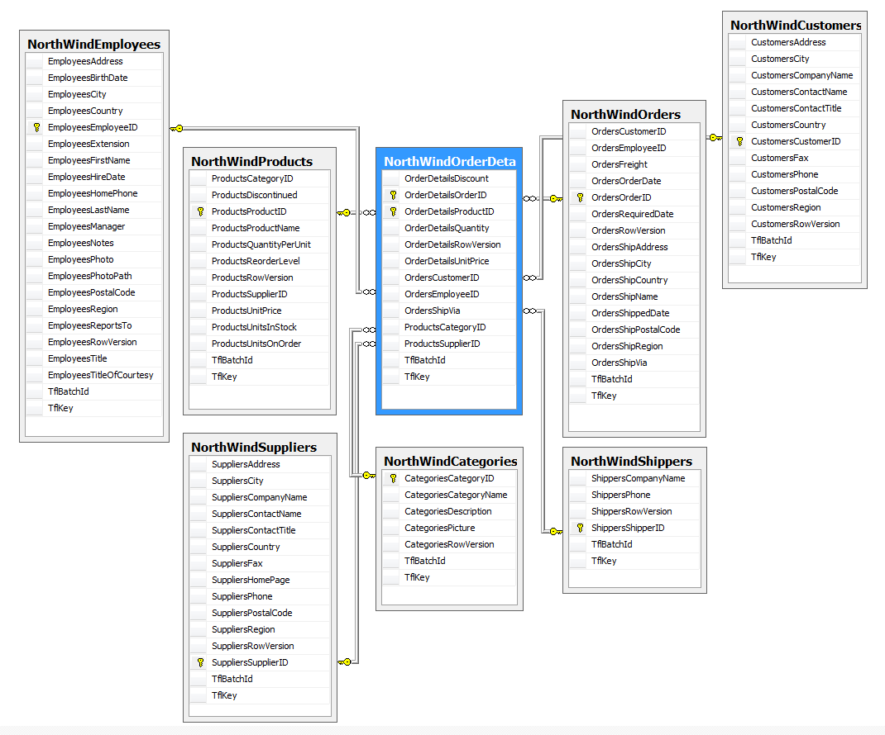
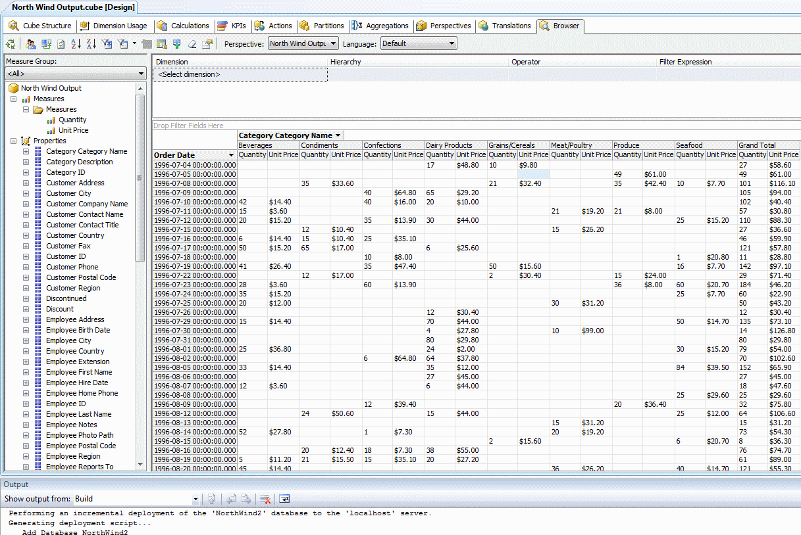
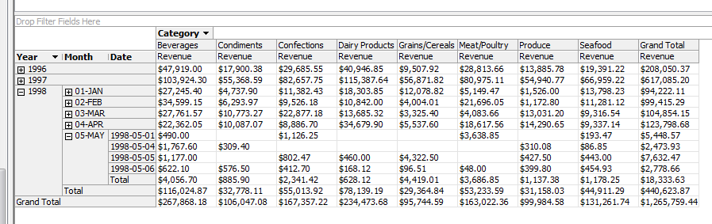
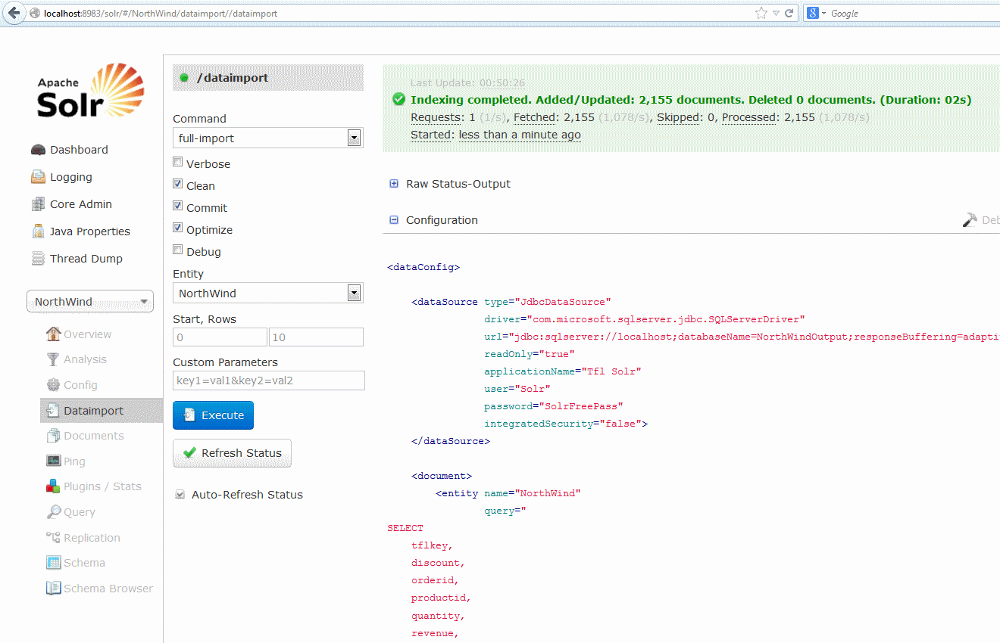

Transformalize aims to transform and denormalize relational data in near real-time. The resulting data may be used in several ways:
Transformalize is an open source .NET 4 Microsoft Windows console application. It is hosted on GitHub.
<?xml version="1.0" encoding="utf-8" ?>
<process>
<connections>
<add name="input" />
<add name="output" />
</connections>
<entities/>
<relationships/>
</process>
Specify the NorthWind database as an input, and another as the output. The default input and output connection provider is SQL Server 2005+.
<connections>
<add name="input" connection-string="server=localhost;Database=NorthWind;Trusted_Connection=True;"/>
<add name="output" connection-string="Server=localhost;Database=NorthWindOutput;Trusted_Connection=True;"/>
</connections>
The NorthWind database:
Add Order Details and save the file as NorthWind.xml.
<entities>
<add name="Order Details"/>
</entities>
Run Transformalize in "metadata" mode:
tfl NorthWind.xml {'mode':'metadata'}
Metadata mode opens an XML file with Order Detail's primary key and field definitions. Copy them into NorthWind.xml:
<entities>
<add name="Order Details">
<fields>
<add name="OrderID" type="System.Int32" primary-key="true" />
<add name="ProductID" type="System.Int32" primary-key="true" />
<add name="Discount" type="System.Single" />
<add name="Quantity" type="System.Int16" />
<add name="UnitPrice" type="System.Decimal"
precision="19" scale="4"/>
</fields>
</add>
</entities>
Run Transformalize in Initialize mode:
tfl NorthWind.xml {'mode':'init'}
23:38:57 | Info | NorthWind | All | Initialized TrAnSfOrMaLiZeR.
23:38:57 | Info | NorthWind | All | Initialized NorthWindOrderDetails in NorthWindOutput on localhost.
23:38:57 | Info | NorthWind | All | Process completed in 00:00:00.5585967.
Run it without specifying a mode:
tfl NorthWind.xml
23:43:01 | Info | NorthWind | Order Details....... | Processed 2155 inserts, and 0 updates in Order Details.
23:43:01 | Info | NorthWind | Order Details....... | Process completed in 00:00:00.7455880.
It copied the data. Run it again.
tfl NorthWind.xml
23:44:18 | Info | NorthWind | Order Details....... | Processed 0 inserts, and 2155 updates in Order Details.
23:44:18 | Info | NorthWind | Order Details....... | Process completed in 00:00:01.0926105.
It updated the data. It copies new and updates existing data, but it is inefficient. It updates data unnecessarily.
So, add a column to Order Details that will increment anytime a record is inserted or updated.
ALTER TABLE [Order Details] ADD RowVersion ROWVERSION;
Update the Order Details entity to use RowVersion:
<entities>
<add name="Order Details" version="RowVersion">
<fields>
<add name="OrderID" type="System.Int32" primary-key="true" />
<add name="ProductID" type="System.Int32" primary-key="true" />
<add name="Discount" type="System.Single" />
<add name="Quantity" type="System.Int16" />
<add name="RowVersion" type="System.Byte[]" length="8" />
<add name="UnitPrice" type="System.Decimal" precision="19" scale="4"/>
</fields>
</add>
</entities>
Re-initialize and run twice:
tfl NorthWind.xml {'mode':'init'}
23:58:52 | Info | NorthWind | All | Initialized TrAnSfOrMaLiZeR.
23:58:52 | Info | NorthWind | All | Initialized NorthWindOrderDetails in NorthWindOutput on localhost.
23:58:52 | Info | NorthWind | All | Process completed in 00:00:00.5504415.
tfl NorthWind.xml
00:00:18 | Info | NorthWind | Order Details....... | Processed 2155 inserts, and 0 updates in Order Details.
00:00:18 | Info | NorthWind | Order Details....... | Process completed in 00:00:00.7417452.
tfl NorthWind.xml
00:00:23 | Info | NorthWind | Order Details....... | Processed 0 inserts, and 0 updates in Order Details.
00:00:23 | Info | NorthWind | Order Details....... | Process completed in 00:00:00.6042720.
Now it doesn't update data unnecessarily. View the output.
SELECT TOP 10 Discount, OrderID, ProductID, Quantity, UnitPrice
FROM NorthWindStar;
Discount OrderID ProductID Quantity UnitPrice
------------- ----------- ----------- -------- ---------
0.2 10248 11 12 14.0000
0 10248 42 10 9.8000
0 10248 72 5 34.8000
0 10249 14 9 18.6000
0 10249 51 40 42.4000
0 10250 41 10 7.7000
0.15 10250 51 35 42.4000
0.15 10250 65 15 16.8000
0.05 10251 22 6 16.8000
0.05 10251 57 15 15.6000
Review the NorthWind diagram. The next closest tables to Order Details are Orders and Products.
Add the Orders entity. Hint: Add entity <add name="Orders"/> and run Tfl in metadata mode.
<add name="Orders" version="RowVersion">
<fields>
<add name="OrderID" type="System.Int32" primary-key="true" ></add>
<add name="Discount" type="System.Single" ></add>
<add name="Quantity" type="System.Int16" ></add>
<add name="RowVersion" type="System.Byte[]" length="8" ></add>
<add name="UnitPrice" type="System.Decimal" precision="19" scale="4"></add>
<add name="CustomerID" type="System.Char" length="5" ></add>
<add name="EmployeeID" type="System.Int32" ></add>
<add name="Freight" type="System.Decimal" precision="19" scale="4"></add>
<add name="OrderDate" type="System.DateTime" ></add>
<add name="RequiredDate" type="System.DateTime" ></add>
<add name="RowVersion" type="System.Byte[]" length="8" ></add>
<add name="ShipAddress" length="60" ></add>
<add name="ShipCity" length="15" ></add>
<add name="ShipCountry" length="15" ></add>
<add name="ShipName" length="40" ></add>
<add name="ShippedDate" type="System.DateTime" ></add>
<add name="ShipPostalCode" length="10" ></add>
<add name="ShipRegion" length="15" ></add>
<add name="ShipVia" type="System.Int32" ></add>
</fields>
</add>
Re-initialize.
tfl NorthWind.xml {'mode':'init'}
22:32:14 | Error | NorthWind | The entity Orders must
have a relationship to the master entity Order Details.
When another table is added, it must be related to the master table. The master table is the first table defined.
In this case, it's Order Details. So, add a relationship:
</entities>
<relationships>
<add leftEntity="Order Details" leftField="OrderID"
rightEntity="Orders" rightField="OrderID"/>
</relationships>
</process>
Re-initialize.
tfl NorthWind.xml {'mode':'init'}
23:13:31 | Error | NorthWind | field overlap error in Orders.
The field: RowVersion is already defined in a previous entity. You must alias (rename) it.
Multiple entities can introduce identical field names. If it does, you have to rename them.
<add name="Orders" version="RowVersion">
<add name="RowVersion" alias="OrdersRowVersion"
type="System.Byte[]" length="8" ></add>
Re-initialize and run twice.
tfl NorthWind.xml {'mode':'init'}
23:23:47 | Info | NorthWind | All | Initialized TrAnSfOrMaLiZeR.
23:23:47 | Info | NorthWind | All | Initialized NorthWindOrderDetails in NorthWindOutput on localhost.
23:23:47 | Info | NorthWind | All | Initialized NorthWindOrders in NorthWindOutput on localhost.
23:23:47 | Info | NorthWind | All | Process completed in 00:00:00.6609756.
tfl NorthWind.xml
23:24:30 | Info | NorthWind | Order Details....... | Processed 2155 inserts, and 0 updates in Order Details.
23:24:30 | Info | NorthWind | Orders.............. | Processed 830 inserts, and 0 updates in Orders.
23:24:30 | Info | NorthWind | Orders.............. | Process completed in 00:00:00.9719255.
tfl NorthWind.xml
23:24:35 | Info | NorthWind | Order Details....... | Processed 0 inserts, and 0 updates in Order Details.
23:24:35 | Info | NorthWind | Orders.............. | Processed 0 inserts, and 0 updates in Orders.
23:24:35 | Info | NorthWind | Orders.............. | Process completed in 00:00:00.7284382.
View the output:
SELECT TOP 10 Discount, OrderID, ProductID, Quantity, UnitPrice,
CustomerID, EmployeeID, Freight, OrderDate, RequiredDate,
ShipAddress, ShipCity, ShippedDate, ShipPostalCode, ShipRegion, ShipVia
FROM NorthWindStar;
Discount OrderID ProductID Quantity UnitPrice CustomerID EmployeeID Freight OrderDate RequiredDate ShipAddress ShipCity ShippedDate ShipPostalCode ShipRegion ShipVia
------------- ----------- ----------- -------- --------- ---------- ----------- -------- ----------------------- ----------------------- ------------------------------------------------------------ --------------- ----------------------- -------------- --------------- -----------
0.2 10248 11 12 14.0000 VINET 5 32.3800 1996-07-04 00:00:00.000 1996-08-01 00:00:00.000 59 rue de l'Abbaye Reims 1996-07-16 00:00:00.000 51100 3
0 10248 42 10 9.8000 VINET 5 32.3800 1996-07-04 00:00:00.000 1996-08-01 00:00:00.000 59 rue de l'Abbaye Reims 1996-07-16 00:00:00.000 51100 3
0 10248 72 5 34.8000 VINET 5 32.3800 1996-07-04 00:00:00.000 1996-08-01 00:00:00.000 59 rue de l'Abbaye Reims 1996-07-16 00:00:00.000 51100 3
0 10249 14 9 18.6000 TOMSP 6 11.6100 1996-07-05 00:00:00.000 1996-08-16 00:00:00.000 Luisenstr. 48 Münster 1996-07-10 00:00:00.000 44087 1
0 10249 51 40 42.4000 TOMSP 6 11.6100 1996-07-05 00:00:00.000 1996-08-16 00:00:00.000 Luisenstr. 48 Münster 1996-07-10 00:00:00.000 44087 1
0 10250 41 10 7.7000 HANAR 4 65.8300 1996-07-08 00:00:00.000 1996-08-05 00:00:00.000 Rua do Paço, 67 Rio de Janeiro 1996-07-12 00:00:00.000 05454-876 RJ 2
0.15 10250 51 35 42.4000 HANAR 4 65.8300 1996-07-08 00:00:00.000 1996-08-05 00:00:00.000 Rua do Paço, 67 Rio de Janeiro 1996-07-12 00:00:00.000 05454-876 RJ 2
0.15 10250 65 15 16.8000 HANAR 4 65.8300 1996-07-08 00:00:00.000 1996-08-05 00:00:00.000 Rua do Paço, 67 Rio de Janeiro 1996-07-12 00:00:00.000 05454-876 RJ 2
0.05 10251 22 6 16.8000 VICTE 3 41.3400 1996-07-08 00:00:00.000 1996-08-05 00:00:00.000 2, rue du Commerce Lyon 1996-07-15 00:00:00.000 69004 1
0.05 10251 57 15 15.6000 VICTE 3 41.3400 1996-07-08 00:00:00.000 1996-08-05 00:00:00.000 2, rue du Commerce Lyon 1996-07-15 00:00:00.000 69004 1
Consult the NorthWind diagram. Continue to add entities and relationships until the relationships look like this:
<relationships>
<add leftEntity="Order Details" leftField="OrderID"
rightEntity="Orders" rightField="OrderID" />
<add leftEntity="Order Details" leftField="ProductID"
rightEntity="Products" rightField="ProductID" />
<add leftEntity="Orders" leftField="CustomerID"
rightEntity="Customers" rightField="CustomerID" />
<add leftEntity="Orders" leftField="EmployeeID"
rightEntity="Employees" rightField="EmployeeID" />
<add leftEntity="Orders" leftField="ShipVia"
rightEntity="Shippers" rightField="ShipperID" />
<add leftEntity="Products" leftField="SupplierID"
rightEntity="Suppliers" rightField="SupplierID" />
<add leftEntity="Products" leftField="CategoryID"
rightEntity="Categories" rightField="CategoryID" />
</relationships>
Adding all these entities creates many duplicate field names. Instead of renaming each one, add a prefix to the entity. A prefix aliases all the fields as prefix + name.
<add name="Employees" version="RowVersion" prefix="Employee">
<fields>
<add name="EmployeeID" type="System.Int32" primary-key="true" ></add>
<add name="Address" length="60" ></add>
<add name="BirthDate" type="System.DateTime" ></add>
<add name="City" length="15" ></add>
<add name="Country" length="15" ></add>
<add name="Extension" length="4" ></add>
<add name="FirstName" length="10" ></add>
</fields>
</add>
Initialize, and run twice. Console output should look like this:
tfl NorthWind.xml {'mode':'init'}
19:41:53 | Info | NorthWind | All | Initialized TrAnSfOrMaLiZeR.
19:41:53 | Info | NorthWind | All | Initialized NorthWindOrderDetails in NorthWindOutput on localhost.
19:41:53 | Info | NorthWind | All | Initialized NorthWindOrders in NorthWindOutput on localhost.
19:41:53 | Info | NorthWind | All | Initialized NorthWindProducts in NorthWindOutput on localhost.
19:41:53 | Info | NorthWind | All | Initialized NorthWindCustomers in NorthWindOutput on localhost.
19:41:53 | Info | NorthWind | All | Initialized NorthWindEmployees in NorthWindOutput on localhost.
19:41:53 | Info | NorthWind | All | Initialized NorthWindShippers in NorthWindOutput on localhost.
19:41:53 | Info | NorthWind | All | Initialized NorthWindSuppliers in NorthWindOutput on localhost.
19:41:53 | Info | NorthWind | All | Initialized NorthWindCategories in NorthWindOutput on localhost.
19:41:53 | Info | NorthWind | All | Process completed in 00:00:01.1828232.
tfl NorthWind.xml
19:42:06 | Info | NorthWind | Order Details....... | Processed 2155 inserts, and 0 updates in Order Details.
19:42:07 | Info | NorthWind | Orders.............. | Processed 830 inserts, and 0 updates in Orders.
19:42:07 | Info | NorthWind | Products............ | Processed 77 inserts, and 0 updates in Products.
19:42:07 | Info | NorthWind | Customers........... | Processed 91 inserts, and 0 updates in Customers.
19:42:07 | Info | NorthWind | Employees........... | Processed 9 inserts, and 0 updates in Employees.
19:42:07 | Info | NorthWind | Shippers............ | Processed 3 inserts, and 0 updates in Shippers.
19:42:07 | Info | NorthWind | Suppliers........... | Processed 29 inserts, and 0 updates in Suppliers.
19:42:07 | Info | NorthWind | Categories.......... | Processed 8 inserts, and 0 updates in Categories.
19:42:07 | Info | NorthWind | Orders.............. | Processed 2155 rows. Updated Order Details with Orders.
19:42:07 | Info | NorthWind | Products............ | Processed 2155 rows. Updated Order Details with Products.
19:42:07 | Info | NorthWind | All................. | Process completed in 00:00:01.2583563.
tfl NorthWind.xml
19:42:13 | Info | NorthWind | Order Details....... | Processed 0 inserts, and 0 updates in Order Details.
19:42:13 | Info | NorthWind | Orders.............. | Processed 0 inserts, and 0 updates in Orders.
19:42:13 | Info | NorthWind | Products............ | Processed 0 inserts, and 0 updates in Products.
19:42:13 | Info | NorthWind | Customers........... | Processed 0 inserts, and 0 updates in Customers.
19:42:13 | Info | NorthWind | Employees........... | Processed 0 inserts, and 0 updates in Employees.
19:42:13 | Info | NorthWind | Shippers............ | Processed 0 inserts, and 0 updates in Shippers.
19:42:13 | Info | NorthWind | Suppliers........... | Processed 0 inserts, and 0 updates in Suppliers.
19:42:13 | Info | NorthWind | Categories.......... | Processed 0 inserts, and 0 updates in Categories.
19:42:13 | Info | NorthWind | All................. | Process completed in 00:00:00.7708553.
Now there are 81 fields available in the output NorthWindStar:
SELECT COUNT(*) AS FieldCount
FROM INFORMATION_SCHEMA.COLUMNS
WHERE TABLE_NAME = 'NorthWindStar'
FieldCount
-----------
81

Open up BIDS, and create an Analysis Services Project (or cube) to browse the data.

As you can see, slicing the measures by order date isn't ideal. Moreover, the unit price and quantity measures don't help much. This cube needs a time hierarchy and revenue. We can add them with Transformalize. First, add three calculated fields based on "order date" to create a time hierarchy:
<add name="ShipRegion" length="15" ></add>
<add name="ShipVia" type="System.Int32" ></add>
</fields>
<calculated-fields>
<add name="TimeDate" length="10" default="9999-12-31">
<transforms>
<add method="dateFormat" format="yyyy-MM-dd" parameter="OrderDate" />
</transforms>
</add>
<add name="TimeMonth" length="6" default="12-DEC">
<transforms>
<add method="dateFormat" format="MM-MMM" parameter="OrderDate" />
<add method="toUpper" />
</transforms>
</add>
<add name="TimeYear" type="System.Int16" default="9999">
<transforms>
<add method="dateFormat" format="yyyy" parameter="OrderDate" />
</transforms>
</add>
</calculated-fields>
</add>
Calculated fields project new fields based on the values of other fields and transforms. They are used at the entity level, or at the process level. In an entity, they have access to any field within their entity. In a process, they have access to any field. To control which fields they have access to, use parameters like this:
<transform method="format" format="{0} is a big city!">
<parameters>
<add field="City" />
</parameters>
</transform>
You may add multiple parameters in this way. If you only have a single parameter, you can specify it in the parameter attribute in the transform element, like this:
<transform method="format" format="{0} is a big city!"
parameter="City" />
Another short-cut is to set the parameter attribute to "*" to include all fields.
There are 28 different transforms built in, and if you can't find one that does what you want, you can use "JavaScript" or "template" transforms to define your own. Use a JavaScript transform to calculate revenue:
<calculated-fields>
<add name="Revenue" type="System.Decimal" >
<transforms>
<add method="javascript"
script="(UnitPrice * (1 - Discount)) * Quantity" parameter="*" />
</transforms>
</add>
</calculated-fields>
Re-initialize and run Tfl. Then, using the new time fields and revenue, see if it improves the cube browsing experience.

The cube looks better now. In order to update it when Transformalizer runs, add a connection and a template action:
<connections>
<add name="input"
value="server=localhost;Database=NorthWind;Trusted_Connection=True;"/>
<add name="output"
value="Server=localhost;Database=NorthWindOutput;Trusted_Connection=True;"/>
<add name="cube"
value="Data Source=localhost;Catalog=NorthWind;"
provider="AnalysisServices"/>
</connections>
<templates path="C:\Tfl\">
<add name="process-cube" file="process-cube.xmla" cache="true">
<settings>
<add name="DatabaseID" value="NorthWind2"></add>
</settings>
<actions>
<add action="run" connection="cube"></add>
</actions>
</add>
</templates>
Transformalizer "templates" use C# Razor syntax. Settings are passed into the template and used like this:
<Batch xmlns="http://schemas.microsoft.com/analysisservices/2003/engine">
<Process xmlns:xsd="http://www.w3.org/2001/XMLSchema"
xmlns:xsi="http://www.w3.org/2001/XMLSchema-instance"
xmlns:ddl2="http://schemas.microsoft.com/analysisservices/2003/engine/2"
xmlns:ddl2_2="http://schemas.microsoft.com/analysisservices/2003/engine/2/2"
xmlns:ddl100_100="http://schemas.microsoft.com/analysisservices/2008/engine/100/100"
xmlns:ddl200="http://schemas.microsoft.com/analysisservices/2010/engine/200"
xmlns:ddl200_200="http://schemas.microsoft.com/analysisservices/2010/engine/200/200">
<Object>
<DatabaseID>@Model.Settings.DatabaseID</DatabaseID>
</Object>
<Type>ProcessFull</Type>
<WriteBackTableCreation>UseExisting</WriteBackTableCreation>
</Process>
</Batch>
Transformalize's template manager will render the template, and subsequently run defined "actions."
The "run" action executes the rendered content against the designated connection.
tfl NorthWind.xml 00:14:28 | Info | NorthWind | Order Details....... | Processed 2155 inserts, and 0 updates in Order Details. 00:14:28 | Info | NorthWind | Orders.............. | Processed 830 inserts, and 0 updates in Orders. 00:14:28 | Info | NorthWind | Products............ | Processed 77 inserts, and 0 updates in Products. 00:14:28 | Info | NorthWind | Customers........... | Processed 91 inserts, and 0 updates in Customers. 00:14:28 | Info | NorthWind | Employees........... | Processed 9 inserts, and 0 updates in Employees. 00:14:28 | Info | NorthWind | Shippers............ | Processed 3 inserts, and 0 updates in Shippers. 00:14:28 | Info | NorthWind | Suppliers........... | Processed 29 inserts, and 0 updates in Suppliers. 00:14:28 | Info | NorthWind | Categories.......... | Processed 8 inserts, and 0 updates in Categories. 00:14:28 | Info | NorthWind | Orders.............. | Processed 2155 rows. Updated Order Details with Orders. 00:14:29 | Info | NorthWind | Products............ | Processed 2155 rows. Updated Order Details with Products. 00:14:31 | Info | NorthWind | Categories.......... | process-cube ran successfully. 00:14:31 | Info | NorthWind | All................. | Process completed in 00:00:03.8312882.
With some more complex templating, and an Apache SOLR server, it is possible to integrate full text search into the process as well...
<templates>
<add name="solr-data-handler"
file="solr-data-handler.cshtml" cache="true">
<actions>
<add action="copy" file="C:\Solr\NorthWind\conf\data-config.xml"/>
</actions>
</add>
<add name="solr-schema" file="solr-schema.cshtml" cache="true">
<actions>
<add action="copy" file="C:\Solr\NorthWind\conf\schema.xml"/>
<add action="web"
url="http://localhost:8983/solr/NorthWind/dataimport?command=full-
import&clean=true&commit=true&optimize=true"/>
</actions>
</add>
</templates>
<search-types>
<add name="default" />
<add name="facet" type="lowercase" store="true" index="true" />
<add name="standard" type="standard_lowercase" store="false" index="true"/>
</search-types>
The Razor templates "solr-data-handler.cshtml" and "solr-schema.cshtml" render configuration files for SOLR.
This is possible because the template manager passes the NorthWind configuration into the templates. To control how the fields are handled,
"search types" are applied to each <field/> or
<calculated-field/>. By default, each field is indexed and stored
in the search index according to it's data type. To assign more complex text analysis, you can set the search-type attribute
to facet, or standard, or any others you define. To exclude a field from search, set search-type to "none."
Running Tfl now produces:
tfl NorthWind.xml
...
00:48:25 | Info | NorthWind | Products............ | Processed 2155 rows. Updated Order Details with Products.
00:48:28 | Info | NorthWind | Categories.......... | process-cube ran successfully.
00:48:28 | Info | NorthWind | Categories.......... | Copied solr-data-handler template output to C:\Solr\NorthWind\conf\data-config.xml.
00:48:29 | Info | NorthWind | Categories.......... | Copied solr-schema template output to C:\Solr\NorthWind\conf\schema.xml.
00:48:29 | Info | NorthWind | Categories.......... | Made web request to
http://localhost:8983/solr/NorthWind/dataimport?command=full-import&clean=true&commit=true&optimize=true.
00:48:29 | Info | NorthWind | Categories.......... | Process completed in 00:00:04.8287386.
In this example, the template action "web" triggers SOLR to clean and re-import the index. In a production environment, you'd want to reload the schema when it changes, and make use of full and delta imports appropriately. If all goes well, you see this in the SOLR admin:

Now, if you schedule Transformalizer to run every couple minutes, you have near real-time OLAP and search engine services. An OLAP cube supports high level reporting needs, and a search engine, well, you know... If your users want to see the data in different ways, and they will, add transforms and/or new calculated fields and re-initialize your output. When Transformalizer reads your production databases, it attempts to do so introducing as little contention as possible.
The NorthWind data is fairly clean. In reality, you'll face more challenging data sources.
I should warn you, that at the time of this writing, Transformalizer:
If you want to "Transformalize" something, download the Tfl64.zip binaries (above). If you'd like to contribute, clone it from GitHub. I use Visual Studio 2012 Professional, but it also seems to build fine in SharpDevelop. You'll notice it uses several other open source projects including:
Where possible, I've included source code from these projects rather than the Nuget packages. The upside in doing this is I get to step into and learn from other people's code. The downside is it's a bit harder to keep these libraries up to date.
Well, that's all. I hope you've enjoyed Transformalizing NorthWind and will attempt to transformalize your own database.